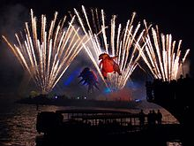

Кра́ків (пол. Kraków, нім. Krakau, лат. Cracoviae) — місто в Польщі на березі Вісли, 760 тисяч жителів (2004), з найближчими передмістями 1,2 млн. Адміністративний центр Малопольського воєводства.
Друге за величиною та кількістю мешканців місто у Польщі після Варшави; одне з найстаріших міст Польщі, з тисячолітньою історією, багатою культурною і архітектурною спадщиною. В період Австро-Угорщини один з центрів Західної Галичини.
Культурна столиця Європи 2000 року. Історичний центр Кракова з 1978 року належить до списку Всесвітньої спадщини ЮНЕСКО[4].
Назва походить від особового імені Крак (засновник або володар фортеці, за легендою князь, нібито правив у VI—VII століттях). Походження імені спірно: зі слов'янського krak (ворон, суч. пол. kruk) або з кельтських мов.
Велика Хорватія на середньому та верхньому Дністрі, в Закарпатті, на Сяні і вдовж гір до верхів'їв Одри, Лаби, Заале і Білої Ельстер процвітала певний час, позбувшись варварського впливу. Рух на південь лехітських племен, одне з яких (вісляни) вклинилося в хорватський масив у районі Кракова і розділило його на дві частини, призвів до поділу Великої Хорватії на дві частини[5].
До кінця ІХ ст. Краків не вирізнявся серед інших хорватських городищ, був меншим за прадавні Носачовиці[6]. Найстарший осередок поселення знаходився на Вавельській Височині; правдоподібно, це був один з найважливіших ґрадів племені віслян[джерело?]. Можливо землі віслян певний час знаходилися під владою Великоморавської Держави. У Х ст. Краків входив до складу держави перших Пжемислідів. Близько 990 року знаходився в межах П'ястівської держави.
Перша відома писемна згадка про Краків (як про важливий торговельний ґрад) походить з повідомлення Ібрагіма ібн Якуба від 965 року. Над Віслою біля Вавелю, на невеликому узгір'ї з юрайського білого каменю, згідно з легендою постала колись святиня поганська, на місці якої побудовано пізніше костел римський Св. Архангела Михаїла.
У 1815–1846 роках був столицею невеликої, але формально незалежної Краківської Речі Посполитої. Вільне місто Краків разом з околицею (Краків був столицею), було останнім виразом формальної незалежності, стосовно польської державності, до часу відродження і становлення незалежності Польщі у 1918 році.
В часах Краківської Речі Посполитої, розпочалась ґрунтовна модернізація і перебудова міста, яке все ще перебувало в середньовічному містобудівельному укладі. Розібрано більшість міських мурів, засипано рів, на місці якого постав парк у вигляді бульварного кільця довкола Старого Міста під назвою Плянти (пол. Planty). Після «краківської революції», тобто збройного повстання, у 1846 році знову був зайнятий Австрією, в межах якої залишався аж до 1918 року. У 1850 році велика пожежа знищила близько 10 % поверхні міста.
Наприкінці жовтня 1918 року після проголошення створення Української держави на території колишніх австрійських володінь в Галичині, Володимерії, Буковині український синьо-жовтий штандарт був піднятий над українізованою військовою частиною в місті. Польська влада при допомозі підрозділів польських легіоністів змогла захопити цю частину.[7]
В часи міжвоєнного двадцятиліття, після здобуття незалежності, польська центральна влада, затвердила вавельський замок, як репрезентаційний будинок Речі Посполитої для користування керівника Держави, а пізніше Президента РП. Ухвалою Сейму Речі Посполитої Польщі з 1921 року, краківський містобудівний ансамбль на Вавелі, став однією з офіційних Резиденцій Президента Польщі. До сьогодні збереглись апартаменти Президента РП Ігнація Мосціцкого.
Німецькі окупанти зайняли місто вже через шість днів після початку війни. В часи гітлерівської окупації (1939–1945) столиця Генерал-губернаторства. Краків був єдиним великим містом, у якому не зафіксовано спаду населення, а в 1945 році був містом, у якому проживало найбільше мешканців. Німецькі окупанти вивезли до Німеччини багато творів мистецтв, з яких велика кількість не повернулась до країни.
На початку Другої Світової війни із зайняттям Радянським Союзом західноукраїнських земель, саме емігранти з Східної Галичини перетворили Краків на своєрідний центр українського життя. Зокрема, на грудень 1939 р. у Кракові перебували Роман Бжеський, Лідія Бурачинська, Святослав Гординський, Ірина Винницька, Катря Гриневичева, Микола Денисюк, Федір Дудко, Ростислав Єндик, Василь Кархут, Іван Кедрин (Рудницький), Роман Купчинський, Богдан та Лев Лепкі, Осип Назарук, Петро Постолюк, Олена Теліга, Іван Тиктор, Михайло Хом'як, Микола Чирський, Лев Чубатий, Ігор Федів, а також митці: маляри, графіки та скульптори: Василь Дядинюк, Михайло Черешньовський, Наталя Мілян, Осип Роман Касараб, Нестор Кіселевський, Едвард Козак, Андрій Наконечний та інші.
Центральним елементом культури Кракова є Старе Місто — скарбниця шедеврів мистецтва та цінних пам'яток архітектури. Тут розташовано понад 1200 пам'яток, які представляють усі стилі архітектури, від середньовіччя до новітніх часів. Краківська площа Ринок належить до найбільших у Європі, залишається незмінною з 1257-го року.[16]
У 2013 році Краків отримав звання «місто літератури ЮНЕСКО», ставши 7-м у світі і першим у центрально-східній Європі.[17]
У Національному музеї зберігається єдина в Польщі картина Леонардо да Вінчі «Пані з горностаєм».

У Кракові базується дві футбольні команди Екстракляси «Вісла (Краків)» (найуспішніша команда в історії польського футболу) та «Краковія» (вболівальником якої був Іоанн Павло ІІ)[21], а також кілька менш успішних команд, таких як «Гарбарня», «Гутник» та інші.
Влітку 2017 Краків був одним із шістьох міст Польщі, які приймали молодіжний чемпіонат Європи з футболу.